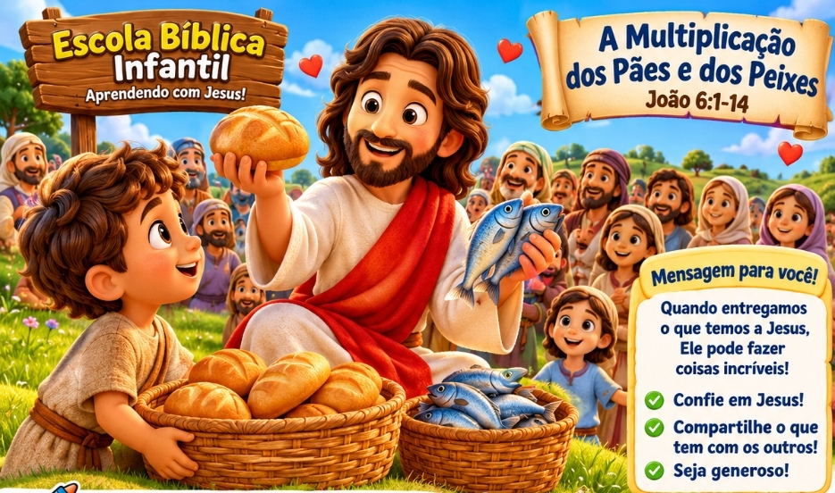
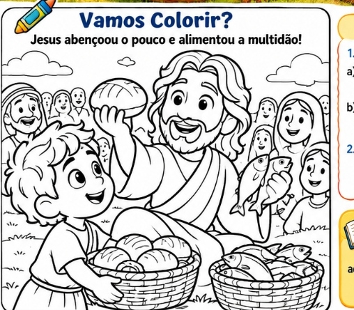

"Jesus tomou os pães e, havendo dado graças, distribuiu-os pelos que estavam assentados; e do mesmo modo os peixes, tanto quanto eles queriam."— João 6:11

Pinte bem bonito este desenho correspondente à história bíblica:

Como você pode colocar essa história da Bíblia em prática na sua vida? Veja as três áreas:
Em Casa (Família)
Ajudar a mamãe e o papai sem reclamar e partilhar meus brinquedos com meus irmãos com alegria!
Na Escola (Recreio)
Quando ver um colega sem lanche ou material, repartir com amor assim como o menino repartiu seus pãezinhos.
No Coração (Amizades)
Não ser egoísta! Lembrar que quando entregamos o pouco que temos a Jesus, Ele multiplica com bênçãos.
"Querido Senhor Jesus, obrigado por cuidar de mim todos os dias. Ensina o meu coraçãozinho a ser generoso e a repartir o que tenho com alegria. Coloco tudo o que sou em Tuas mãos. Amém!"
Encontre na grade as 5 palavras-chave que aprendemos na história:
Marque um ( X ) na resposta certa de acordo com a história da Bíblia:
"Esta semana vou praticar a generosidade: vou repartir com alegria um lanche ou brinquedo com um amigo ou irmão que precise, lembrando do milagre de Jesus!"